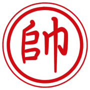
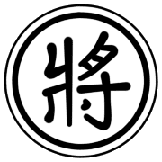
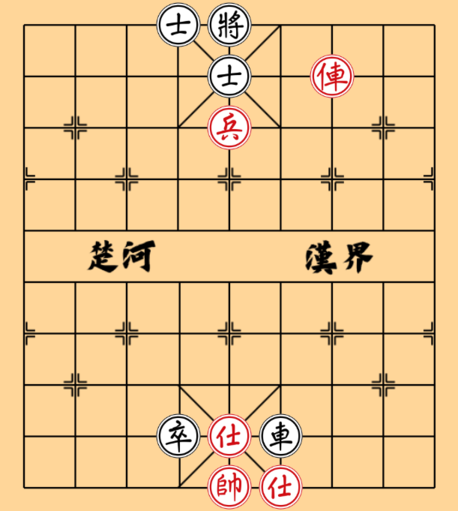
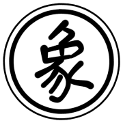
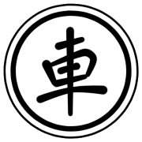
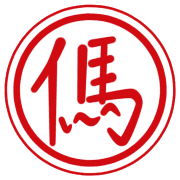
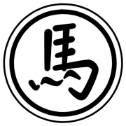
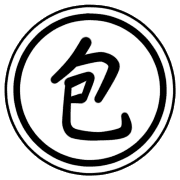
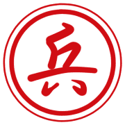
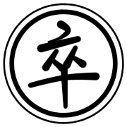

棋子走法與吃法
帥 / 將


走法：在「九宮」內移動，可以上下左右移動一格。
特殊規則：帥和將不能在同一條直線上直接碰面，中間必須有棋子阻隔，這被稱為「王不見王」或「飛將」。
觀念：將/帥是遊戲的唯一目標，它的安全是第一要務。雖然移動力很弱，但在殘局時可以「御駕親征」，發揮一定的攻擊力。
仕 / 士
走法：在「九宮」內沿斜線走一格。是將/帥的貼身護衛。
觀念：主要價值在於防守，保護將帥的核心區域。應避免輕易犧牲，否則將帥的防禦會出現嚴重漏洞。

士的主要任務是保護將帥。雙士環環相扣，組成堅強防禦。
相 / 象

走法：沿著「田」字對角線移動，一次走兩格，俗稱「飛相 / 象」。
特殊規則：不能過河。如果「田」字中心有棋子（塞象眼），則不能往該方向移動。
觀念：核心的防守子力，與「仕」互相配合，鞏固防線。缺點是移動範圍受限且有「塞象眼」的弱點，容易被對方的兵卒或車炮針對。
俥 / 車

走法：沿直線(橫或直)移動，步數不限，只要路徑上沒有其他棋子阻擋。
觀念：象棋中最強的攻擊子力，威力遠大。所謂「一車十子寒」，形容其強大的牽制力。通常是開局、中局、殘局的主力。
傌 / 馬


走法：沿「日」字對角線移動，即先直一格、再斜一格。
特殊規則：如果前進方向的點有棋子（蹩馬腿），則不能往該方向移動。
觀念：非常靈活的棋子，攻擊範圍廣，能同時威脅多個目標，形成「八面威風」。馬的走位非常關鍵，有所謂「連環馬」的防守陣勢，也有「臥槽馬」、「盤河馬」等經典攻擊定式。殘局時，由於棋子減少，蹩馬腿的情形減少，威力大增。
炮 / 包


移動：不吃子時，走法與「車」相同。
吃子：炮是唯一吃法與走法不同的棋子。吃子時必須跳過一個棋子（無論敵我，稱為「炮架」）才能攻擊並吃掉後方的敵方棋子。
觀念：遠距離打擊子力，在開局棋子密集時威脅極大。所謂「當頭炮」，就是開局的核心戰術之一。與馬相反，殘局時，由於棋子減少，炮架難尋，價值會明顯下降。俗諺「殘棋炮歸象」，殘局階段炮適合退回九宮內找士 / 象作為炮架。
兵 / 卒


走法：過河前，只能向前直走一格。過河後，可以前進、左行、或右行，但永遠不能後退。
觀念：兵卒的價值在於「潛力」。未過河的兵主要起防守作用，一旦過河，威力劇增，能威脅對方大子。深入敵陣，能控制九宮將帥的兵卒其價值有時不亞於一馬或一炮。